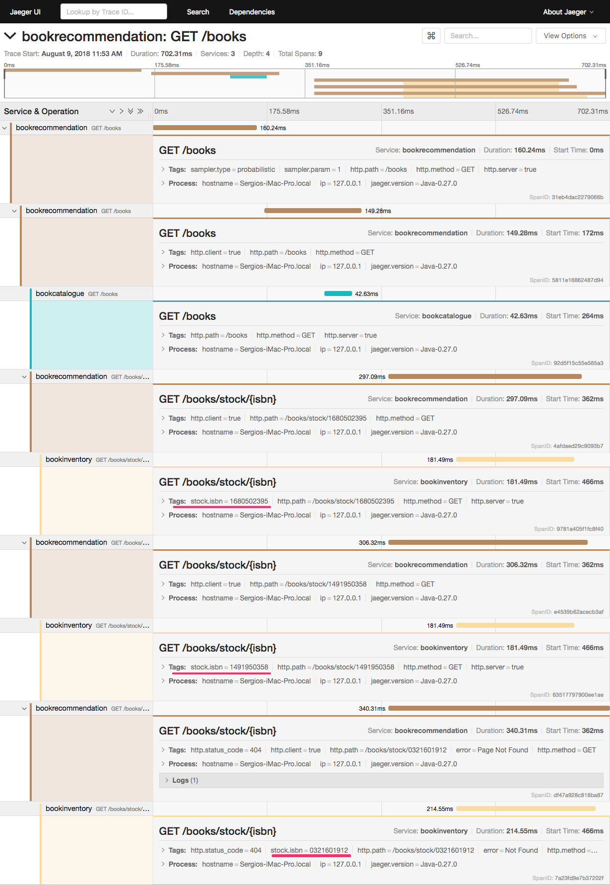

Use OpenTracing with Jaeger and the Micronaut Framework for Microservice Distributed Tracing
Use Jaeger distributed tracing to investigate the behaviour of your Micronaut applications.
On this guide
In this section
Getting Started
In this guide, we will integrate Jaeger with a Micronaut application composed of three microservices.
As on-the-ground microservice practitioners are quickly realizing, the majority of operational problems that arise when moving to a distributed architecture are ultimately grounded in two areas: networking and observability. It is a much larger problem to network and debug a set of intertwined distributed services versus a single monolithic application.
You will discover how the Micronaut framework eases Jaeger integration.
What you will need
To complete this guide, you will need the following:
-
Some time on your hands
-
A decent text editor or IDE (e.g. IntelliJ IDEA)
-
JDK 21 or greater installed with
JAVA_HOMEconfigured appropriately
Solution
We recommend that you follow the instructions in the next sections and create the application step by step. However, you can go right to the completed example.
-
Download and unzip the source
Writing the Application
To learn more about this sample application, read the guide. The application contains three microservices.
-
bookcatalogue- This returns a list of books. It uses a domain consisting of a book name and an ISBN. -
bookinventory- This exposes an endpoint to check whether a book has sufficient stock to fulfill an order. It uses a domain consisting of a stock level and an ISBN. -
bookrecommendation- This consumes previous services and exposes an endpoint that recommends book names that are in stock.
The bookcatalogue service consumes endpoints exposed by the other services. The following image illustrates the application flow:

A request to bookrecommendation (http://localhost:8080/books) triggers several requests through our microservices mesh.
Jaeger and the Micronaut Framework
Install Jaeger via Docker
The quickest way to start Jaeger is via Docker:
docker run -d --name jaeger \
-e COLLECTOR_ZIPKIN_HTTP_PORT=9411 \
-p 5775:5775/udp \
-p 6831:6831/udp \
-p 6832:6832/udp \
-p 5778:5778 \
-p 16686:16686 \
-p 14268:14268 \
-p 14250:14250 \
-p 9411:9411 \
jaegertracing/all-in-one:latestBook catalogue
Add tracing dependency.
implementation("io.micronaut:micronaut-tracing")To send tracing spans to Jaeger, the minimal configuration requires you to add the following dependency:
runtimeOnly("io.jaegertracing:jaeger-thrift")Append the following snippet to the bookcatalogue service application.properties:
In production, you will probably want to trace a smaller percentage of the requests. However, in order to keep this guide simple, we set it to trace 100%.
Disable distributed tracing in tests:
tracing.jaeger.enabled=falseBook inventory
Add tracing dependency.
implementation("io.micronaut:micronaut-tracing")To send tracing spans to Jaeger, the minimal configuration requires you to add the following dependency:
runtimeOnly("io.jaegertracing:jaeger-thrift")Append the following snippet to the bookinventory service application.properties:
In production, you will probably want to trace a smaller percentage of the requests. However, in order to keep this guide simple, we set it to trace 100%.
Disable distributed tracing in tests:
tracing.jaeger.enabled=falseAnnotate the method with @ContinueSpan and the parameter with @SpanTag:
Book recommendation
Add tracing dependency.
implementation("io.micronaut:micronaut-tracing")To send tracing spans to Jaeger, the minimal configuration requires you to add the following dependency:
runtimeOnly("io.jaegertracing:jaeger-thrift")Append the following snippet to the bookrecommendation service application.properties:
In production, you will probably want to trace a smaller percentage of the requests. However, in order to keep this guide simple, we set it to trace 100%.
Disable distributed tracing in tests:
tracing.jaeger.enabled=falseRunning the Application
Run bookcatalogue microservice:
To run the application, execute ./gradlew run.
...
14:28:34.034 [main] INFO io.micronaut.runtime.Micronaut - Startup completed in 499ms. Server Running: http://localhost:8081Run bookinventory microservice:
To run the application, execute ./gradlew run.
...
14:31:13.104 [main] INFO io.micronaut.runtime.Micronaut - Startup completed in 506ms. Server Running: http://localhost:8082Run bookrecommendation microservice:
To run the application, execute ./gradlew run.
...
14:31:57.389 [main] INFO io.micronaut.runtime.Micronaut - Startup completed in 523ms. Server Running: http://localhost:8080You can run a cURL command to test the whole application:
curl http://localhost:8080/books[{"name":"Building Microservices"}You can then navigate to http://localhost:16686 to access the Jaeger UI.
The previous request generates traces composed of 9 spans.

In the previous image, you can see that:
-
Whenever a Micronaut HTTP client executes a new network request, it creates a new span.
-
Whenever a Micronaut server receives a request, it creates a new span.
The stock.isbn tags that we configured with @SpanTag are present.
Moreover, you can see the requests to bookinventory are made in parallel.
Next Steps
As you have seen in this guide, without any annotations, you get distributed tracing up and running fast with the Micronaut framework.
The Micronaut framework includes several annotations to give you more flexibility. We introduced the @ContinueSpan and @SpanTag annotations. Also, you have at your disposal the @NewSpan annotation, which will create a new span, wrapping the method call or reactive type.
Make sure to read more about Tracing with Jaeger in the Micronaut framework.
Help with the Micronaut Framework
The Micronaut Foundation sponsored the creation of this Guide. A variety of consulting and support services are available.
License
|
Note
|
All guides are released with an Apache License 2.0 for the code and a Creative Commons Attribution 4.0 license for the writing and media (images). |